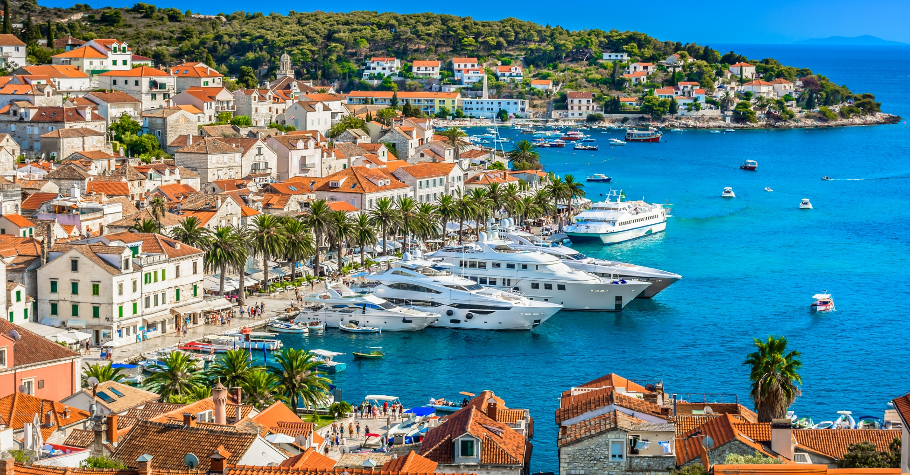
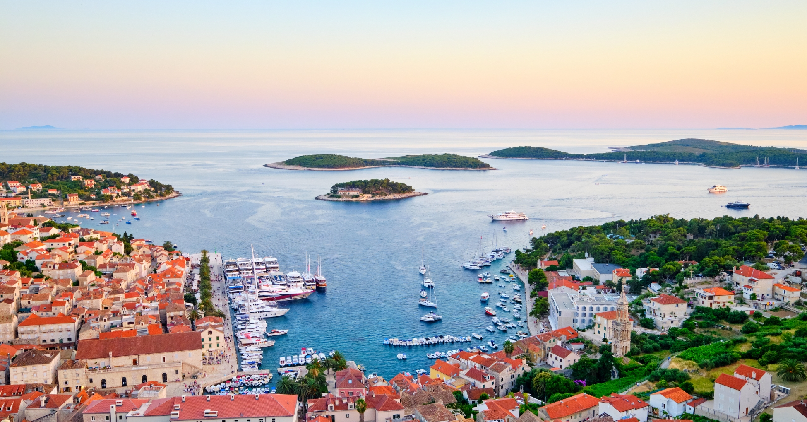
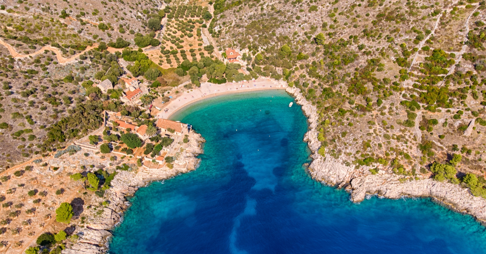
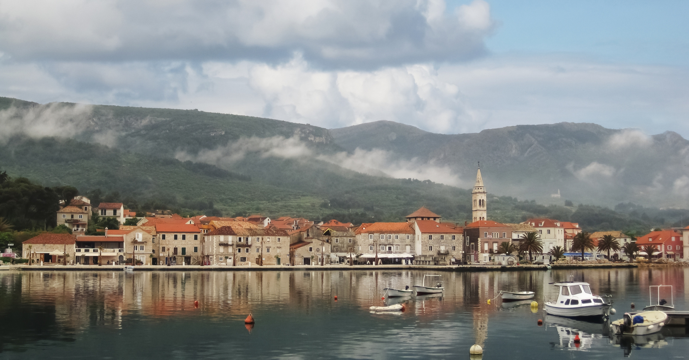
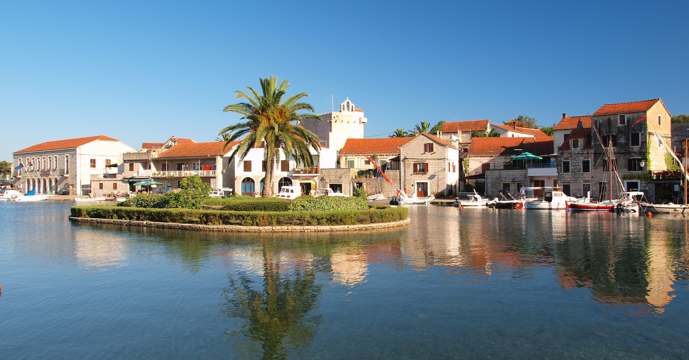

Nešto o Hvaru:
Jedno od najpoznatijih znamenitosti ostrva je Stari Grad, koji je jedan od najstarijih gradova u Evropi i pod zaštitom UNESCO-a.
Sa svojim uskim kamenim ulicama, prelepim trgovima i brojnim istorijskim zgradama, Stari Grad pruža jedinstvenu atmosferu i bogato kulturno iskustvo.
Još jedna atrakcija ostrva Hvar je tvrđava Fortica, koja se nalazi na vrhu brda iznad grada Hvara.
Posetioci mogu uživati u spektakularnom pogledu na grad i okolna ostrva sa ove istorijske lokacije, dok istražuju njegove zidine i kulturno nasleđe.
Osim toga, Hvar nudi prelepe plaže sa kristalno čistim morem, kao što su plaže Dubovica, Zlatni rat i Pakleni otoci.
Ovi rajski delovi obale pružaju idealnu priliku za sunčanje, plivanje i ronjenje u tirkiznom moru.
Ono što čini Hvar posebno privlačnim je i njegova živopisna noćna scena.
Ostrvo je poznato po svojim živahnim barovima, klubovima i restoranima koji nude bogatu ponudu hrane, pića i zabave tokom cele noći.
Sve ove znamenitosti i aktivnosti čine Hvar neodoljivom destinacijom za posetu.
Bez obzira da li ste ljubitelj istorije, prirode, plaža ili noćnog života, Hvar nudi nezaboravno iskustvo za sve posetioce.
Posetite Hvar i otkrijte lepotu ovog magičnog ostrva u srcu Jadrana.


Aktivnosti na ostrvu Hvar:
Na Hvaru postoji obilje stvari koje možete raditi, videti i probati tokom posete ostrvu.
1. Istražite Paklena ostrva
Paklena ostrva, smeštena uz jugoistočnu obalu ostrva Hvar, predstavljaju jednu od najatraktivnijih turističkih destinacija ovog regiona.
Ova grupa od 19 šumovitih ostrva, koja doslovno znače "Paklena ostrva" na engleskom jeziku, privlači pažnju posetilaca širom sveta svojom izuzetnom lepotom i raznovrsnošću atrakcija.
Prvo što privlači turiste je spektakularan prirodni pejzaž.
Paklena ostrva su okružena kristalno čistim tirkiznim morem i prekrivena bujnom mediteranskom vegetacijom, pružajući posetiocima nezaboravan doživljaj netaknute prirode.
Osim toga, ostrva su poznata po svojim prelepim plažama i skrivenim uvalama, koje nude idealne uslove za sunčanje, plivanje i istraživanje podvodnog sveta.
Jedna od najpoznatijih atrakcija na Paklenim ostrvima je Palmižana, ostrvo koje je pretvoreno u rajski vrt sa prelepim vrtovima, restoranima, barovima i galerijama.
Posetioci mogu uživati u šetnji kroz egzotične biljne vrste, degustaciji lokalnih specijaliteta i kupanju na slikovitim plažama.
Ako se pridružite našoj privatnoj turi brodom ili flotili, savetujemo Vam da ne propustite ovaj doživljaj!

Paklena Ostrva
2. Isprobajte čuvenu lavandu sa Hvara
Hvar već godinama gaji mirisna polja lavande širom ostrva.
Ako postoji proizvod koji bi čak i donekle mogao sadržati lavandu, na ostrvu Hvar ćete ga sigurno pronaći!
Ulje lavande, sladoled od lavande i med od lavande samo su neki od proizvoda koji su dostupni!
Dok istražujete ostrvo, primetićete polja lavande koja rastu gotovo na svakom koraku!
Kraj juna je najbolje vreme da doživite punu raskoš lavandinih polja u punom cvatu.
Posetite porodično vođeno polje lavande, nabavite malo ulja lavande za uspomenu ili jednostavno uživajte u lokalnom sladoledu od lavande!
3. Posetite tvrđavu Španjola
Tvrđava Španjola, poznata i kao Fortica, predstavlja jednu od najimpresivnijih znamenitosti na ostrvu Hvar.
Tvrđava je izgrađena u 16. veku kao odbrambena tvrđava protiv turskih osvajača.
Tokom vekova, bila je ključna tačka odbrane grada Hvara i njegovih stanovnika.
Danas, tvrđava služi kao muzej i domaćin je impresivne kolekcije amfora i antikviteta.
Posetioci mogu istražiti bogatu istoriju ostrva Hvar kroz artefakte iz prošlih vremena.
Jedan od najvećih razloga za posetu tvrđavi Španjola je spektakularan pogled koji pruža.
Sa vrha tvrđave, posetioci mogu uživati u panoramskom pogledu na grad Hvar, Jadransko more i obližnja Paklena ostrva, što čini posetu nezaboravnim iskustvom.
Pored muzejskih eksponata, tvrđava takođe ima kafe bar gde posetioci mogu uživati u piću i opuštenoj atmosferi dok uživaju u prelepom pogledu.
Kako bi stigli do tvrđave, posetioci moraju proći kroz uske uličice i stepenice Starog grada Hvara, što pruža priliku za istraživanje šarmantnih delova grada pre nego što se popnu na vrh.
Ukratko, tvrđava Španjola je nezaobilazna destinacija za sve posetioce ostrva Hvar.
Njen značaj u istoriji ostrva, impresivna muzejska kolekcija, spektakularan pogled i jedinstven doživljaj čine je nezaboravnom destinacijom za istraživanje i uživanje.
4. Probajte lokalna vina
Hvar već više od 2.400 godina neguje tradiciju vinogradarstva i autohtonih sorti grožđa, što ga čini savršenim mestom za uživanje u degustaciji vina!
Prve vinove loze zasađene su na, sada pod zaštitom UNESCO-a, Starogradskoj poljani 384. godine pre nove ere, što znači da su neke loze na ovom ostrvu stare vekovima.
Topla klima, bogato i raznovrsno zemljište, kao i drevne tradicije proizvode lokalne sorte vina poput Pošipa i Plavca Malog, koji su osvojili brojne nagrade.
Najbolje lokacije za zabavu na Hvaru:
Omiljen među poznatima i ljubiteljima noćnog provoda, Hvar je idealno ostrvo za one koji traže nezaboravnu noćnu avanturu i žele da iskuse najbolji noćni život koji Hrvatska ima da ponudi!
Još jedna atrakcija ostrva Hvar je tvrđava Fortica, koja se nalazi na vrhu brda iznad grada Hvara.
Posetioci mogu uživati u spektakularnom pogledu na grad i okolna ostrva sa ove istorijske lokacije, dok istražuju njegove zidine i kulturno nasleđe.
1. Carpe Diem
2. Nautica Bar
3. Hula Hula Bar
Gde jesti na Hvaru:
Ovo su samo neka od mnogobrojnih lokacija gde možete jesti ukusnu hranu.
1. Mizarola
2. Apetti
3. Divino
Posetite najlepše plaže na Hvaru:
Hvar je poznat po tome što ima neke od najlepših plaža u Hrvatskoj koje se nalaze tik uz njegove obale.
Sa obzirom na toliko izbora, mi smo ih suzili na naše favorite!
1. Pokonji dol
2. Mekičevica plaža
3. Dubovica

Dubovica
Stari Grad
Stari Grad, jedan od bisera ostrva Hvar, očarava posetioce svojom istorijskom lepotom i jedinstvenim šarmom.
Ovo slikovito mesto, smešteno na severu ostrva, predstavlja jedno od najstarijih gradskih naselja u Evropi, sa istorijskim korenima koji sežu duboko u prošlost.
Jedna od najupečatljivijih karakteristika Starog Grada je njegova bogata istorija, koja datira još iz perioda oko 3.000 godina pre nove ere.
Grad je bio svedok mnogih istorijskih događaja i promena, što se može videti u njegovoj arhitekturi i spomenicima koji svedoče o različitim periodima i kulturama koje su oblikovale ovaj grad.
Osim svoje istorijske važnosti, Stari Grad očarava svojom slikovitošću i prirodnim lepotama.
Okružen bujnim mediteranskim pejzažem, grad se prostire duž prelepe obale i nudi spektakularne poglede na Jadransko more.
Šetajući njegovim uskim kamenim ulicama, otkrićete skrivene trgove, tradicionalne kuće od kamena i živopisne vrtove punih mirisnih mediteranskih biljaka.
Posetioci mogu istraživati njegove antičke ruševine, posetiti muzeje posvećene lokalnoj istoriji i umetnosti, ili jednostavno uživati u lokalnim restoranima i kafićima koji nude autentične dalmatinske specijalitete.
1. Prošetajte venecijanskim ulicama
Jedan od najboljih načina da doživite destinaciju jeste da se jednostavno izgubite u njoj, a to je posebno istinito u Starom Gradu.
Dok su veći gradovi prenatrpani na svakom koraku, Stari Grad je očaravajuće prazan, što vam omogućava da istražite sve njegove tajne bez uznemiravanja.
Venecijanske uličice Starog Grada su mnogo manje u poređenju sa gradovima poput Splita i Dubrovnika, što znači da možete proći celom mrežom ulica gde je vreme stalo, sve u toku jednog dana.
Na svakom koraku očekuje vas nešto novo: od slikovitih kafića do drevnih arkada i divnih restorana, što samo pojačava vašu radoznalost!
2. Uživajte u Rivi Stari Grad
Palmina šetališta uz obalu imaju romantičnu privlačnost, bilo da se šetate pored venecijanskih zgrada starih vekovima, ili opuštate u restoranu na otvorenom, kafa u ruci, posmatrajući lokalno stanovništvo kako provodi vreme.
Zagrli nežan i spor način života na Rivi u ovom starom gradu, uzimajući vreme da zahvatite što više prelepih prizora koliko je moguće.
3. Posetite muzej Starog Grada
Sa obzirom na istoriju Starog Grada, muzej koji prikazuje njegovu bogatu prošlost je nešto što se podrazumeva.
Otkrijte sva čuda i artefakte istorije Starog Grada unutar samog blaga - muzej se nalazi u neorenesansnoj palati iz 19. veka, nekadašnjem domu braće Biankini iz 1896. godine!
4. Pešačite do brda Glavica
Pešačenje do brda Glavica je izvodljivo za sve nivoe fizičke spreme.
Relativno je lagani uspon koji postaje malo uzak prema vrhu.
U skladu sa hrvatskim terenom, pešačenje je praćeno gustim borovima duž ivica koji će pružiti hlad za one tropske letnje dane.
Dvadesetominutni hod će se otvoriti panoramskim pogledom na Stari Grad, a možda ćete čak uhvatiti pogled na susedna mesta.
5. Probajte sladoled od lavande
Na ostrvu koje obiluje prirodnim cvetom - čak i festivalom istog - sladoled od lavande je neobična lokalna poslastica koju treba probati.
Stara izreka kaže, 'ruža je miris srca, lavanda je miris duše' - šta je bolje za dušu od uživanja u sladoledu!
Najbolji barovi u Starom Gradu:
1. Hvar
2. Lampedusa Bar
Gde jesti u Starom Gradu:
1. Jurin podrum
2. Antika
3. Konoba Batana
4. Kod Barba Luke
Posetite najlepše plaže u Starom Gradu:
1. Plaža Banj
2. Maslinička uvala
3. Plaža Oslič


Stari Grad
Jelsa
Na severnoj obali ostrva Hvar nalazi se Jelsa, mali lučki grad smešten na obali slikovite uvale.
Jelsa je miran grad ispunjen fantastičnim mestima za kupanje, intimnim ulicama i upečatljivim trgovima.
Iz Jelse možete videti dva najviša vrha na ovom ostrvu, Sveti Nikola i Hum, i otkriti najznačajnije praistorijsko nalazište na Jadranu, pećinu Grapčeva.
Jelsa je takođe poznata po svojim prelepim plažama i slikovitim okolinama.
Uživanje na plažama poput Mina, Grebišće ili Stiniva pruža nezaboravno iskustvo, dok okolni pejzaži prepuni zelenila i vinograda pružaju spektakularne poglede.
Osim toga, Jelsa je poznata po vinogradima i vinarijama, a poseta lokalnim vinarijama kao što su Tomić i Plančić pruža priliku da se uživa u degustaciji vrhunskih vina.
Za ljubitelje aktivnog odmora, Jelsa nudi brojne mogućnosti, uključujući planinarenje na obližnjim brdima, biciklizam kroz prelepu prirodu ostrva i razne vodene aktivnosti.
Gde jesti u Jelsi:
1. Konoba Kokot
2. Konoba Stari Mlin
3. Restoran Me and Mrs. Jones
Najbolji barovi u Jelsi:
1. Konoba Ribar
2. Jazz Bar
3. Konoba Bonaca

Jelsa
Vrboska
Grad Vrboska na ostrvu Hvar predstavlja jedinstvenu destinaciju koja oduševljava posetioce svojom lepotom i šarmom.
Smatra se jednim od najmanjih gradova na ostrvu, ali obiluje bogatom istorijom, prelepom prirodom i raznovrsnim aktivnostima za sve ukuse.
Jedna od najupečatljivijih karakteristika Vrboske je njena slikovita lokacija u zaštićenoj uvali, koja je čini jednom od najsigurnijih luka na Jadranskom moru.
Šetnja kroz grad otkriva prelepe kamene mostove koji prelaze preko kanala, povezujući grad sa ostrvom u sredini uvale.
Osim toga, fascinantne fasade i utvrđena crkva dodaju čar Vrboski.
Što se tiče aktivnosti, Vrboska nudi nešto za svakoga.
Ljubitelji prirode mogu istraživati obližnje staze za šetnje ili planinarenje, dok avanturisti mogu uživati u raznim vodenim sportovima poput ronjenja, jedrenja ili vožnje kajakom.
Oni koji vole kulturne aktivnosti mogu posetiti lokalne muzeje, galerije i crkve kako bi saznali više o bogatoj istoriji i kulturi grada.
Vrboska nudi nekoliko prelepih mesta za kupanje i opuštanje.
Neke od najpoznatijih plaža uključuju Soline, Maslinicu i Česminicu, koje su poznate po kristalno čistoj vodi i mirnom okruženju.
Posetite neke od barova u Vrboskoj:
1. Nautica Bar
2. Konoba Sidro
3. Beach Bar Bacchus
4. Konoba Vina Hvar
5. Picerija Antonio
Gde jesti u Vrboskoj:
1. Konoba kod None
2. Konoba Duga
3. Konoba Kogo
4. Konoba Vrtlic

Vrboska